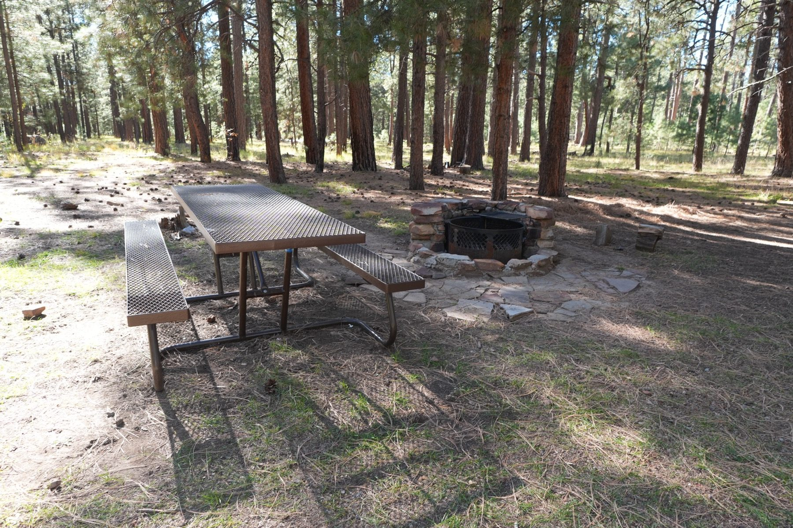

Choose a campsite that still works after dark
The easiest time to reject a bad site is before the cooler is out. Walk the sleeping spot, kitchen and night route before the view talks you into unloading.

A view is not a campsite plan
I will take a quieter, flatter, easier site over a dramatic one that makes every chore harder. Stand where you would sleep, cook, sit after dinner and walk to the bathroom. If those places fight each other, keep looking.
Hazards are not points on a scorecard. One serious problem is enough to reject a site. Shade, convenience and scenery do not cancel it out.
Eliminate the sites that should not be candidates
Start with permission and access: use an allowed, established campsite and respect closures, boundaries and posted rules. An open-looking patch beside a road is not automatically a legal site.
- Water runs through it. Avoid washes, drainage channels and depressions with signs of pooling. Do not turn an unsuitable pad into a project with trenches.
- Something overhead could fall. Damaged limbs, dead trees, loose rock or an uncertain overhead hazard are reasons to move—not reasons to put the tent slightly off center.
- The route out depends on everything staying dry. Check the forecast and road information before committing to a low crossing or soft approach. Do not plan to drive through floodwater to leave.
- Your setup does not fit. If doors, tent lines and ordinary foot traffic require using vegetation, neighboring space or a new vehicle track, choose a different site or a smaller setup.
Walk it in this order
Find the sleeping surface
Walk the whole tent footprint, including the vestibule and lines. Look for slope, roots, rocks and runoff marks. A level-looking area from the driver's seat may put a root exactly under your hip. Check where the door will open before deciding where the bed goes.
Look up, then follow the water downhill
Check above every occupied area, not only the tent. Follow the surrounding grade with your eyes and feet: where would rain arrive, and where could it leave? Dry weather can hide the reason a patch is bare or muddy. If you cannot make sense of the site, do not use the flattest depression by default.
Place the vehicle and kitchen
Open the hatch or sliding door mentally before parking. Leave access to the gear you still need. Use the existing table where practical, with the cooking area out of the main walking route and an outdoor stove positioned with its required clearances. Reserve a place for water, cleanup and contained trash.
Check shade, wind and neighbors
Notice where the sun is now and where it will move. Shade at arrival is not necessarily shade over the tent in the morning. Consider wind exposure, road dust, bathroom traffic, headlights and where other people naturally walk. Avoid solving shade by accepting suspect limbs overhead.
Walk the night route
Trace tent to shoes, water, bathroom and vehicle. If the route crosses a fire area, low guyline or cooking station, adjust the layout now. Make sure the spot still works when a person is sleepy, carrying a light and not paying much attention.
Choose a site with an exit, not just a rain plan
Weather preparation starts before setup: forecast, road condition, drainage, exposure and the ability to leave. Keep keys, lights and weather layers accessible. If the approach is likely to deteriorate, leave before that becomes the trip's main problem.
Rain and wind
Keep dry sleep gear protected, stake and guy the shelter before conditions worsen, and lower or remove optional canopies when they cannot be kept controlled. Loose bins, towels and packaging should be put away before gusts scatter them.
A tarp does not repair bad drainage. If water is flowing through the sleeping area, move to a suitable location rather than digging around the tent. Keep a no-cook meal available so shelter problems do not also become stove problems.
Thunder means stop
Move promptly to a substantial building or enclosed metal-topped vehicle with windows closed. A tent, tarp or open shelter is not lightning protection. Wait at least 30 minutes after the last thunder before returning outside. National Weather Service guidance.
Do not stay to finish pitching or save optional equipment. Know where the safe shelter is before you need it.
Heat, smoke, flooding, extreme wind or temperatures beyond your equipment can make leaving the right choice. For summer trip selection, use the Phoenix heat-escape guide; a pretty campsite does not make an unsuitable forecast acceptable.
Then choose between the workable options
Once the hazards are ruled out, you can trade conveniences. A slightly longer bathroom walk may buy a quieter night. A smaller view may buy a more sheltered kitchen. An easy tent pad may matter more than being closest to the lake.
Pick the compromise that matches the trip. A one-night stop favors easy access and quick setup; a longer stay puts more weight on shade and how the living area works all day. Move before unloading if the compromise is already irritating you.
Before the first bin comes out
Walk these checks with whoever is sharing the site. An unchecked item means there is still a decision to make—not that you should unpack and solve it later. Ticks are not saved by the site.